Hướng dẫn thao tác trên màn Đặt phòng: booking trực tiếp, booking OTA, và những sửa đổi phải gửi quản lý duyệt trước khi có hiệu lực.
Ảnh chụp từ phần mềm đang chạy · 3/10/2026
1. Mở danh sách đặt phòng
Trên laptop, vào nhóm Phòng ở menu trái, chọn Đặt phòng. Muốn tạo mới thì bấm nút Đặt mới góc phải.
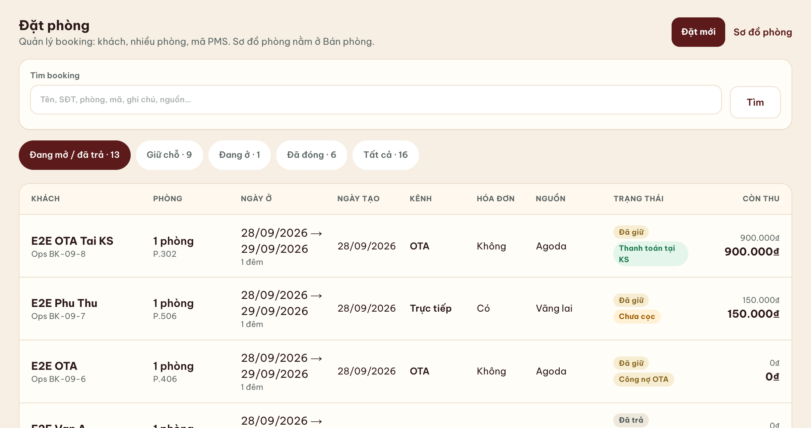
Hình 1. Danh sách booking. Nút Đặt mới nằm góc trên bên phải.
Tìm booking theo tên, số điện thoại, số phòng, mã, ghi chú hoặc nguồn.
Tab lọc trạng thái: Đang mở / đã trả, Giữ chỗ, Đang ở, Đã đóng, Tất cả.
Cột Kênh ghi Trực tiếp hoặc OTA. Cột Nguồn ghi đúng nơi khách đặt: Zalo, Vãng lai, Agoda…
Bấm một dòng để mở booking đó.
2. Tạo booking trực tiếp
Booking tạo mới có hiệu lực ngay khi bấm lưu. Lễ tân không cần gửi phê duyệt ở bước này.
Ở ô Nền tảng, nhóm Trực tiếp gồm: Vãng lai, Điện thoại, Zalo, Facebook, TikTok, Công ty / đoàn, ezCloud / web KS. Chọn đúng kênh khách đang đặt. Ví dụ dưới đây là Zalo.
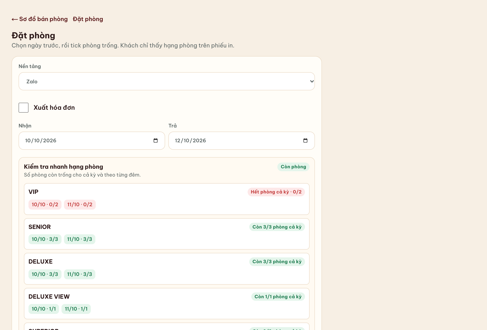
Hình 2. Chọn nền tảng, ngày nhận, ngày trả. Bảng phía dưới cho biết mỗi hạng còn bao nhiêu phòng.
Nền tảng. Chọn kênh trực tiếp. Ô Xuất hóa đơn chỉ tick khi khách cần hóa đơn.
Ngày nhận và ngày trả. Chọn ngày trước, rồi mới tick phòng. Đổi ngày thì danh sách phòng trống cập nhật lại.
Xem hạng còn phòng. Dòng xanh là còn phòng. Dòng đỏ “Hết phòng cả kỳ” thì không tick hạng đó.
Tick phòng trống. Tick một hoặc nhiều phòng. Dòng “Đã chọn” hiện số phòng vừa tick.
Giá, ăn sáng, chiết khấu. Mỗi phòng một dòng. Nếu thấy “Chưa có giá bảng — nhập giá bán” thì phải gõ giá một đêm, nếu không booking lưu với giá 0 đồng. Bỏ tick Ăn sáng nếu phòng đó không ăn. Chiết khấu chọn % hoặc số tiền.
Phụ thu (nếu có): chọn dịch vụ, số lượng, rồi Thêm phụ thu.
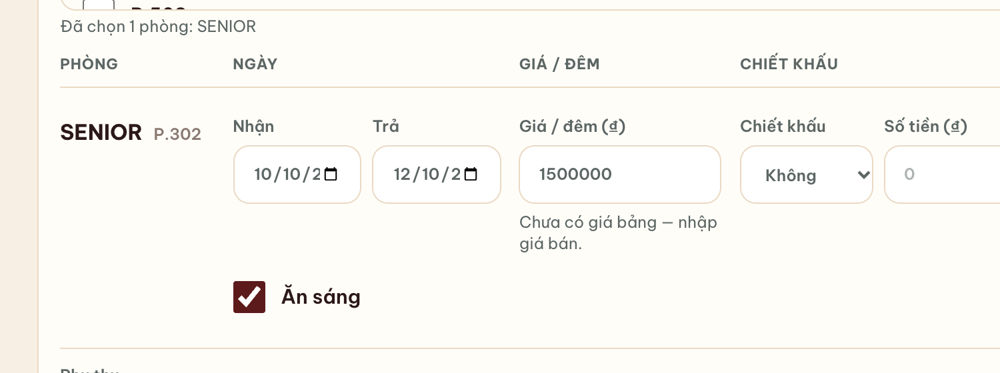
Hình 3. Đã tick P.302, giá 1.500.000 đồng/đêm, vẫn ăn sáng, chưa chiết khấu.
Cột bên phải: khách và tiền cọc
Đặt cọc và hình thức: CK công ty, CK cá nhân, hoặc Tiền mặt. Tạm tính hiện ngay: tổng phòng, đã cọc, còn phải thu.
Họ tên là bắt buộc. Nhập SĐT, số người lớn, trẻ em.
Khách ăn sáng không được lớn hơn số khách ở. Bỏ ăn sáng ở phòng thì hai ô này về 0.
Ô tô, xe máy, ghi chú (giờ đến, giường, xe đón). Mã PMS để trống — Ops tự cấp mã BK.
Nhận phòng luôn chỉ tick khi khách đến trong ngày và nhận phòng ngay. Khách đặt trước thì để trống.
Bấm Lưu đặt phòng. Nhiều phòng thì nút thành “Lưu … phòng”.
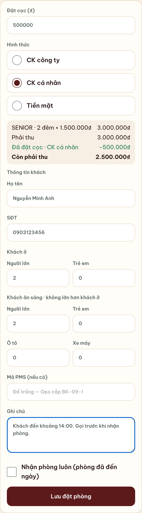
Hình 4. Cọc 500.000 đồng, CK cá nhân. Còn phải thu 2.500.000 đồng. Ô nhận phòng luôn để trống vì khách chưa đến trong ngày.
3. Tạo booking OTA
Cùng nút Đặt mới. Ở Nền tảng, chọn nhóm OTA: Booking.com, Agoda, Traveloka, Expedia, Airbnb, hoặc OTA khác.
Form hiện thêm hai chỗ OTA không có ở booking trực tiếp: hình thức thanh toán và hoa hồng. Ô xuất hóa đơn tự bật và không tắt được — dòng chữ “OTA luôn xuất hóa đơn”.
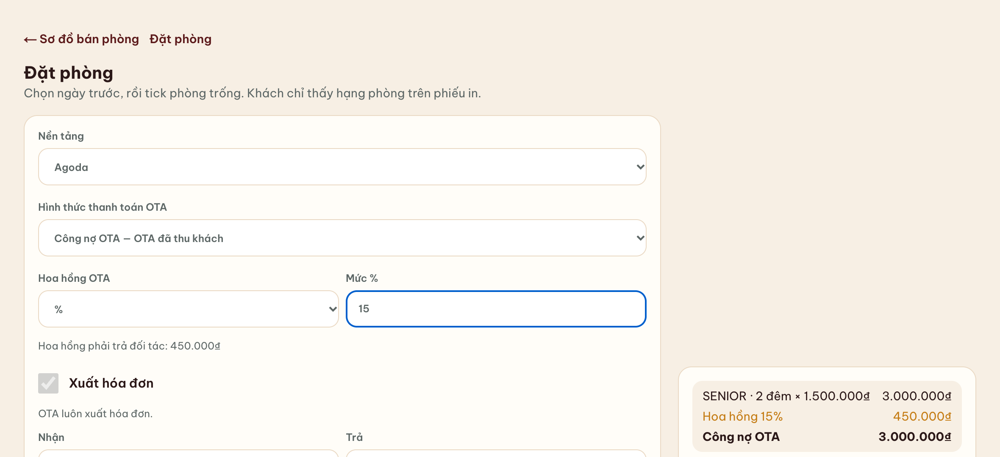
Hình 5. Agoda, công nợ OTA, hoa hồng 15%. Phần mềm tính hoa hồng phải trả đối tác ngay trên form.
Hai cách thu tiền
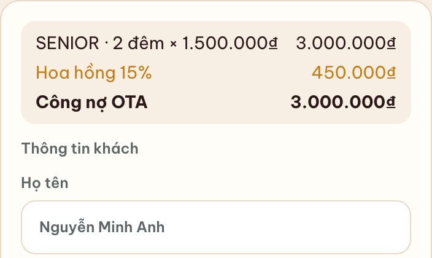
Hình 6. Công nợ OTA — OTA đã thu khách. Không nhập cọc. Toàn bộ tiền phòng là công nợ OTA.
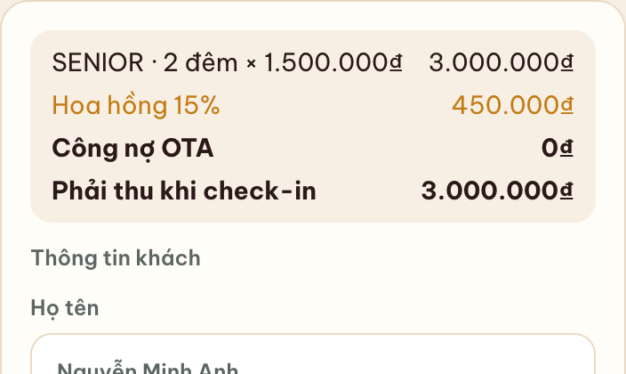
Hình 7. Thanh toán tại KS — khách trả khi đến. Công nợ OTA = 0. Phải thu khi check-in bằng tiền phòng.
Công nợ OTA — OTA đã thu khách: khách đã trả trên OTA. Khách sạn không thu cọc và không thu lại lúc check-in.
Thanh toán tại KS — khách trả khách sạn: OTA chỉ đưa booking, khách vẫn trả tiền tại quầy.
Hoa hồng OTA: chọn % hoặc số tiền, rồi nhập mức. Đây là khoản khách sạn phải trả đối tác, không phải tiền thu khách.
Phòng, ngày, giá, ăn sáng, tên khách làm giống booking trực tiếp. Xong thì bấm Lưu đặt phòng. Tạo OTA mới cũng có hiệu lực ngay, chưa cần duyệt.
Nhớ phân biệt hai loại OTA trước khi lưu
Trên danh sách, booking công nợ có nhãn “Công nợ OTA” và còn thu là số công nợ. Booking khách trả tại khách sạn có nhãn “Thanh toán tại KS”.
4. Booking vừa lưu
Sau khi lưu, phần mềm mở thẳng trang booking. Kiểm tra tên, phòng, ngày, tiền cọc, còn phải thu và mã Ops.
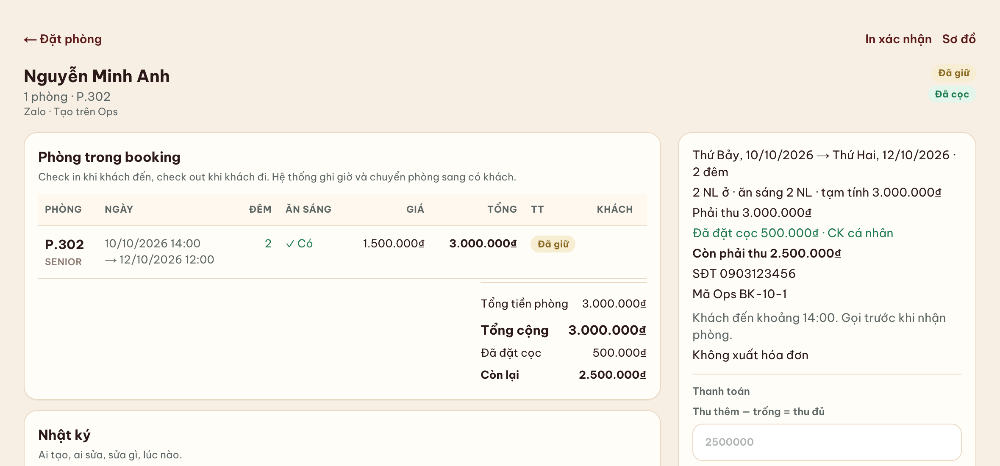
Hình 8. Booking Zalo vừa tạo: P.302, 2 đêm, đã cọc 500.000 đồng, còn phải thu 2.500.000 đồng. Nhật ký ghi người tạo.
Khách trả thêm lúc này: nhập số tiền ở Thu thêm, chọn hình thức, bấm nút thu. Ô trống nghĩa là thu đủ phần còn lại.
In xác nhận ở góc trên khi khách cần phiếu.
Check-in và check-out làm trên từng phòng trong bảng “Phòng trong booking”, khi khách đến và khi khách đi.
5. Sửa booking
Mở booking, kéo xuống, bấm Sửa booking. Lễ tân sửa được tên, số điện thoại, số khách, kênh, phòng, ngày, ăn sáng, chiết khấu, cọc và ghi chú.
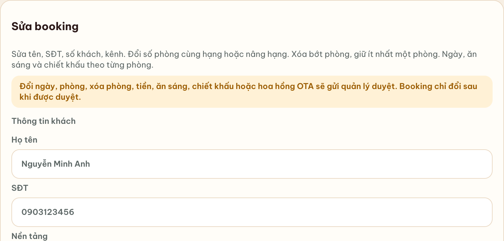
Hình 9. Dòng vàng liệt kê việc nào phải gửi quản lý. Booking chỉ đổi sau khi được duyệt.
Nút dưới form tự đổi theo nội dung vừa sửa:
Việc lễ tân sửa
Nút bấm
Kết quả
Họ tên, số điện thoại, số khách ở, số khách ăn sáng, ô tô, xe máy, ghi chú, xuất hóa đơn
Lưu booking
Đổi ngay
Ngày nhận hoặc ngày trả, đổi phòng, xóa bớt phòng, bật/tắt ăn sáng, chiết khấu
Gửi phê duyệt
Chờ quản lý. Booking giữ nguyên
Đặt cọc, thu đủ khi check-in, hình thức CK/tiền mặt
Gửi phê duyệt
Chờ quản lý. Booking giữ nguyên
Đổi nền tảng, đổi công nợ OTA, sửa hoa hồng OTA
Gửi phê duyệt
Chờ quản lý. Booking giữ nguyên
Ví dụ: ngày trả đang là 12/10. Sửa thành 13/10 thì tạm tính nhảy lên 3 đêm và nút thành Gửi phê duyệt.
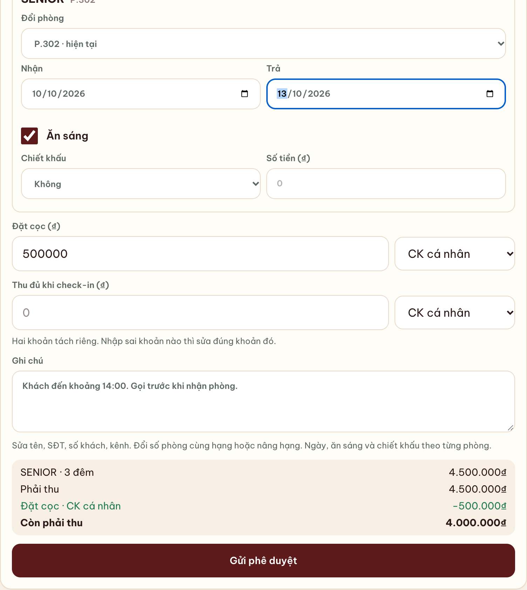
Hình 10. Đổi ngày trả. Tạm tính đã là 3 đêm, nhưng bấm Gửi phê duyệt thì booking chưa đổi.
Hai khoản tiền tách riêng
Đặt cọc và Thu đủ khi check-in là hai ô khác nhau. Nhập sai khoản nào thì sửa đúng khoản đó. Đổi số tiền hoặc hình thức thanh toán đều phải gửi duyệt.
6. Sau khi gửi phê duyệt
Trang hiện dòng vàng: Đã gửi quản lý duyệt. Booking chưa thay đổi. Khung Phê duyệt thay đổi ghi việc gì đổi, từ đâu sang đâu, ai gửi, và trạng thái “Chờ quản lý duyệt”.
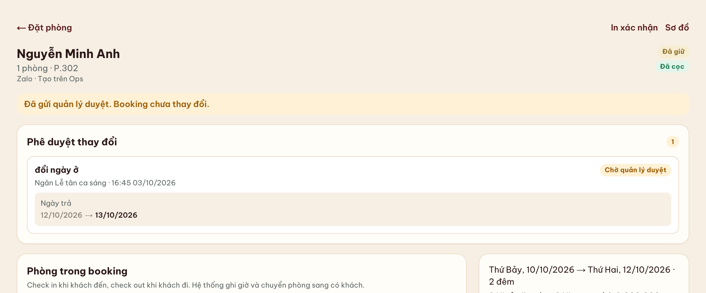
Hình 11. Đề nghị “đổi ngày ở”: ngày trả 12/10/2026 → 13/10/2026. Phòng trên booking vẫn trả ngày 12/10 cho đến khi quản lý duyệt.
Quản lý mở cùng booking này, bấm Chấp nhận thì thay đổi mới vào booking. Bấm Từ chối thì phải ghi lý do. Lễ tân không có hai nút đó.
Nhật ký thêm dòng “Gửi duyệt” kèm nội dung đề nghị.
Khi đang có một đề nghị chờ duyệt, không gửi thêm đề nghị khác. Phần mềm báo “Booking đang có một đề nghị chờ quản lý duyệt”. Nhắc quản lý xử lý cái đang chờ, rồi mới gửi việc mới.
7. Thêm phòng và phụ thu
Cũng nằm trong trang booking, phía trên mục Sửa booking.
Thêm phòng: giữ nguyên khách, ngày và nền tảng. Giá theo hạng phòng thêm. Lễ tân bấm thêm thì đề nghị đi quản lý, phòng chưa vào booking.
Dịch vụ / phụ thu: thêm hoặc xóa đều gửi quản lý duyệt trước khi cộng hoặc trừ tiền.
Đổi phòng hoặc đổi ngày bằng cách kéo trên Sơ đồ phòng cũng gửi phê duyệt, rồi quay về trang booking với cùng dòng “Đã gửi quản lý duyệt”.
Hủy booking
Lễ tân không hủy booking trên Ops. Cần hủy hoặc ghi no-show thì báo quản lý.
8. Việc nên kiểm tra trước khi rời màn hình
Nền tảng đúng nhóm: trực tiếp hay OTA, và đúng kênh (Zalo, Agoda…).
OTA: đã chọn đúng “OTA đã thu khách” hoặc “khách trả tại khách sạn”, và đã nhập hoa hồng.
Ngày nhận, ngày trả, số phòng đã tick, giá một đêm khác 0.
Tên khách, số điện thoại, số người ở và số người ăn sáng.
Cọc và hình thức thu, nếu là booking trực tiếp.
Nếu vừa sửa ngày, phòng hoặc tiền: đã thấy dòng “Đã gửi quản lý duyệt”, và hiểu là booking chưa đổi.